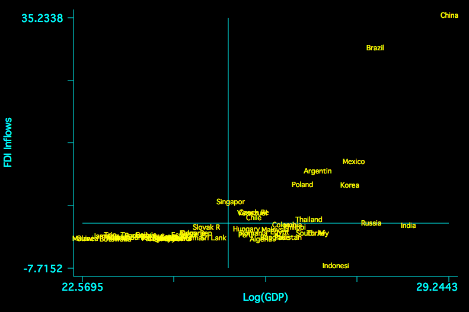

Our fourth class meeting will focus on Chapter 6 and Chapter 7 of Handbook of Regression Modeling in People Analytics. The video will be on youtube.
The Skinny
With qualitative outcomes that are nominal (Chapter 6) or ordered (Chapter 7); linear regressions and/or binary GLMs are insufficiently flexible and/or rich to confront the problem. In the nominal case, how one chose to turn the categories to values is unknown and, in the ordered case, the idea that unit distance separates the categories is an arbitrary assumption that is unlikely to be true.
Multinomial Models
A Bit on Random Utility
There’s a great blog post that I found that details this. In a classic paper for which [among many others], Daniel L. McFadden was awarded the Nobel Prize in Economics, he develops a multinomial/conditional logistic regression model for the study of nominal outcomes. The core statistics demonstration is that, if random utility for options is described by a Gumbel/Type I extreme value distribution, then the difference in utility has a logistic distribution. From this observation, one can develop random utility models for unordered choices that follows from utility maximization. In short, we can use microeconomic foundations to motivate the models that follow.
A Bit On Model Specification
There are two ways to think about such models. They can be motivated by choice-specific covariates or by chooser specific covariates [or a combination of both]. In general, if the covariates are chooser-specific, we call it a multinomial logit model while, if the covariates are choice specific, we call it conditional logit or conditional logistic regression. McFadden’s paper is built around transportation choices.
One Key Assumption to McFadden’s Approach
The independence of irrelevant alternatives contends that, when people choose among a set of alternatives, the odds of choosing option A over option B should not depend on the presence or absence of unchosen alternative C. Paul Allison, a famous emeritus sociologist at the University of Pennsylvania, has a nice blog post on this that is well worth the time.
Imagine the following scenario; you are out to dinner and you are given menus. One of your companions is excited to choose a steak from the menu. The server arrives and announces the specials of the day; your companion then decides that a pork chop option from the menu is preferable. Perhaps they were originally indifferent between the steak and the pork chop. Nevertheless, it would appear as though the presentation of irrelevant alternatives – the specials – had a nontrivial effect on your companion’s choices.
Multinomial [Unordered] Outcomes
An example: exchange rate regimes and the vanishing middle.
There is a sizable literature on how countries structure markets for currency exchange. There are two polar approaches:
Fixed: the price is fixed and central banks offer the needed quantities to maintain a given price.
Flexible: the quantities are fixed and the price adjusts.
but there is also a third: intermediate regimes; things like floating pegs, the ERM snake, and others that are mixtures of the two. The literature in international monetary economics highlights these as prone to instability.
```{r}DescTools::PseudoR2(multi_model, which =c("McFadden", "CoxSnell", "Nagelkerke","AIC"))```
Warning in DescTools::PseudoR2(multi_model, which = c("McFadden", "CoxSnell", :
Could not find model or data element of multinom object for evaluating PseudoR2
null model. Will fit null model with new evaluation of 'EXRT.data'. Ensure
object has not changed since initial call, or try running multinom with 'model =
TRUE'
# weights: 12 (6 variable)
initial value 1606.171166
iter 10 value 532.176055
iter 20 value 531.979184
iter 20 value 531.979183
iter 20 value 531.979183
final value 531.979183
converged
# weights: 15 (8 variable)
initial value 1441.379323
iter 10 value 482.863574
iter 20 value 480.237337
iter 30 value 480.208852
final value 480.208838
converged
Comparisons
```{r}DescTools::PseudoR2(multi_model.2, which =c("McFadden", "CoxSnell", "Nagelkerke","AIC"))```
Warning in DescTools::PseudoR2(multi_model.2, which = c("McFadden",
"CoxSnell", : Could not find model or data element of multinom object for
evaluating PseudoR2 null model. Will fit null model with new evaluation of
'EXRT.data'. Ensure object has not changed since initial call, or try running
multinom with 'model = TRUE'
```{r}DescTools::PseudoR2(multi_model.3, which =c("McFadden", "CoxSnell", "Nagelkerke", "AIC"))```
Warning in DescTools::PseudoR2(multi_model.3, which = c("McFadden",
"CoxSnell", : Could not find model or data element of multinom object for
evaluating PseudoR2 null model. Will fit null model with new evaluation of
'EXRT.data'. Ensure object has not changed since initial call, or try running
multinom with 'model = TRUE'
My preferred method of thinking about ordered regression involves latent variables. So what is a latent variable? It is something that is unobservable, hence latent, and we only observe coarse realizations in the form of qualitative categories. Consider the example from Li in the Journal of Politics.
Li Abstract
The Outcome
The outcome is summed from six individual types of incentives. They are explained here.
Tax Incentives to FDI
and
Tax Incentives Part 2
Inputs
There are two parts to the data description for the inputs.
Part 1
and
and there is a further description of other variables that are deployed.
Controls: Part 1
and
Controls: Part 2
The Data
This should give us an idea of what is going on. The data come in Stata format; we can read these via the foreign or haven libraries in R.
```{r}library(MASS); library(foreign)```
Attaching package: 'MASS'
The following object is masked from 'package:patchwork':
area
The following object is masked from 'package:dplyr':
select
It is worthwhile to notice that the top of the scale is rather sparse.
There is also a concern about FDI and economies of scale. The following is a plot of the relationship between FDI and size of the economy in the sample.

FD-Size
Without careful attention to normalization, China is a clear x-y outlier.
Motivating the Model
Suppose there is some unobserved continuous variable, call it \(y^{*}\) that measures the willingness/utility to be derived from tax incentives to FDI. Unfortunately, this latent quantity is unobservable; we instead observe how many incentives are offered and posit that the number of incentives is a manifestation of increasing utility with unknown points of separation – cutpoints – that separate these latent utilities into a mutually exclusive and exhaustive partition. In a simplified example, consider this.
So anything below -3 is zero incentives; anything between -3 and -2 is one incentive, … , and anything above 4 should be all six incentives. What we have is a regression problem but the outcome is unobserved and takes the form of a logistic random variable. Indeed, one could write the equation as:
\[y^{*} = X\beta + \epsilon\]
where \(\epsilon\) is assumed to have a logistic distribution but this is otherwise just a linear regression. Indeed, the direct interpretation of the slopes is the effect of a one-unit change in X on that logistic random variable.
What to Replicate
The table of estimates is presented in the paper; I will copy it here.
Results Table
I will choose two of a few models estimated in the paper. First, let us have a look at Model 1.
Call:
polr(formula = generositygF ~ law00log + transition, data = Li.Data)
Coefficients:
Value Std. Error t value
law00log -0.6192 0.4756 -1.3019
transition -0.5161 0.7126 -0.7243
Intercepts:
Value Std. Error t value
0|1 -1.3617 0.3768 -3.6144
1|2 -0.4888 0.3323 -1.4707
2|3 1.1785 0.3668 3.2133
3|4 2.3771 0.5361 4.4339
4|5 3.1160 0.7325 4.2541
5|6 3.8252 1.0183 3.7565
Residual Deviance: 164.3701
AIC: 180.3701
We can read these by stars. There is nothing that is clearly different from zero as a slope or 1 as an odds-ratio. The authors deploy a common strategy for adjusting standard errors that, in this case, is necessary to find a relationship with statistical confidence. That’s a diversion. To the story. In general, the sign of the rule of law indicator is negative, so as rule of law increases, incentives decrease though we cannot rule out no effect. Transitions also have a negative sign; regime changes have no clear influence on incentives. There is additional information that is commonly given short-shrift. What do the cutpoints separating the categories imply? Let’s think this through recongizing that the estimates have an underlying t/normal distribution. 4|5 is within one standard error of both 3|4 and 5|6. The model cannot really tell these values apart. Things do improve in the lower part of the scale but we should note that this is where the vast majority of the data are actually observed.
Odds Ratios
Next, I will turn the estimates into odds-ratios by exponentiating the estimates.
```{r}exp(li.mod1$coefficients)```
law00log transition
0.5384016 0.5968309
For Kawika, this is one of the many cases that I am familiar with where robust is necessary to find something. Note neither effect can be differentiated from zero with much confidence at all. To further examine the claims, I will also replicate the right-most column.
The last model is clearly better than the first by any of these measures. That said, there are a lot of additional predictors that add much complexity to the model and the difference in AIC is not very large.
What about the others?
```{r}# lipsitz test # generalhoslem::lipsitz.test(li.mod1)# generalhoslem::lipsitz.test(li.mod4)```
They fail to work because of sparseness.
Testing Proportional-Odds
The text cites a test that owes to Brant on examining proportionality. It turns out that I know a bit about this; I published a purely theoretical stats paper showing that it is not at all clear what the alternative hypothesis embodied in this test actually means because the only model with a proper probability distribution for \(y^{*}\) is this proportional-odds model.
I will follow the text with this caveat in mind:
```{r}brant::brant(li.mod1)```
--------------------------------------------
Test for X2 df probability
--------------------------------------------
Omnibus 13.51 10 0.2
law00log 8.64 5 0.12
transition 4.28 5 0.51
--------------------------------------------
H0: Parallel Regression Assumption holds
So 6+12+4+1 or 23 of 51 are correctly predicted with a rather big and complicated model.
On AIC
The AIC [and BIC] are built around the idea of likelihood presented last time. The formal definition, which is correct on Wikipedia explains the following: